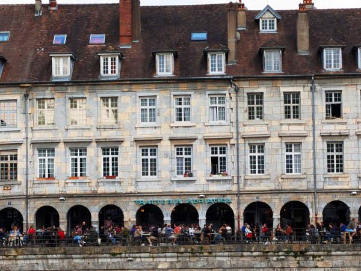

Sunday 8th June We checked out of the hotel at 8:45 and after stopping for petrol and food for breakfast, we were on our way out of Gerona by 9:00. We knew that today would involve a lot of driving. We have to be in Nitra, Slovakia for England's first game in the U21's on Thursday and this will involve a trip of about 1200 miles. We wanted to do a big chunk of that today.
We started heading North and drove into France before stopping for breakfast. We did not have anywhere booked to stay tonight as we did not know how far we would go. We had planned to drive through Switzerland and stay somewhere there but after a couple of hours, the sat-nav was telling us to go a different route. This meant going very close to Lyon before continuing North, missing Switzerland altogether and going straight from France into Germany tomorrow.
We found a city that neither of us had heard of - Besançon - that had an Ibis and was just about on the route. We had a couple of stops on the way and completed the journey of about 485 miles by just after 5pm. Although there had bee a lot of driving, it was all relatively easy driving again so was not too bad a day.

We checked in and went straight out for a walk around Besançon. The old town centre is a UNESCO World Heritage Site and is actually a very nice place. We wandered round the main sights and up to the citadel before heading back to the hotel. We were both tired by this stage and had decided to get a takeaway instead of going out to eat. By the time we were back in the hotel, the final of the French Open was getting exciting so I went out to get a pizza while Roz watched the tennis.
Monday 9th June